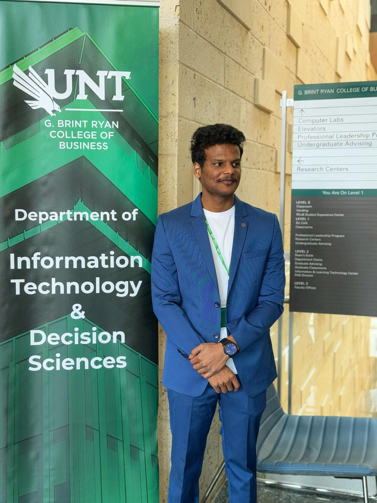

Club Executive Board

Shola Habeeb
President
President

Israel Odebiyi
Vice President
Vice President

Stephie Konan
Membership & Events Co-Director
Membership & Events Co-Director

Bhupal Reddy Maymula
Workshop Co-Director
Workshop Co-Director

Supriya Bollineni
Workshop Co-Director
Workshop Co-Director

Prakash Teki
Communications Co-Director
Communications Co-Director
Aditya Vikram Reddy Vennapusala
Communications Co-Director
Communications Co-Director